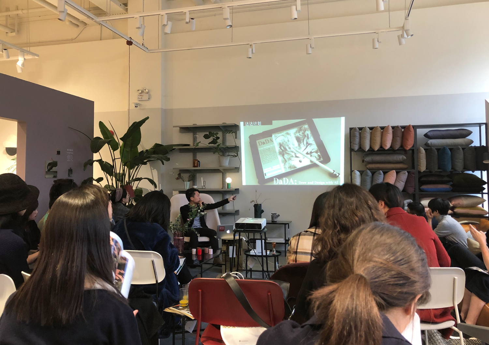

* photo credit to Modern Weekly, Notes On Nature.
Research Statement
Artists and other professional creative participants should conduct research as in other fields, so to
enhance and advance their practices. In my personal experiences, written research is guided through
cumulative stages of critical reflection and/or interpretive analysis of my practices. I intend to
develop art projects for specific research question(s) that I want to investigate. Led by research
questions, I dedicate to conduct a combination of praxis and thinking, where writing actively
contributes to the creative work itself, functioning as an integral part of the overall research. Both
culminate the research deliver as exhibited artwork and submission of creative research writing that
best articulates and reflects ideas. In brief, the creative work is the research itself together with a
written component informing research.
Create with Artificial Intelligence
My general practice and research interests spread in interactive media, generative art and machine
vision for arts applications. And recently, I focus on utilizing artificial intelligence/machine
learning to create art and have been directed by three questions:
1. can Artificial Intelligence be creative?
2. can we design AI to collaborate with and facilitate, enhance human creativity?
3. and how could the Chinese cultural heritage be involved and evolved?
Zhou, Le and Fuqi Xie (2022). Welcome To Heshan: An Installation To Create Immersive And Entertaining Experiences With Local Art Through Interactive Media Technologies. In: The 24th International Conference on Human-Computer Interaction. (peer reviewed; accepted to HCII 2022).
Li, Zixin and Le Zhou. (2021). The Museum of Dreams: Exploring a “Dreaming” Visual Experience via Machine Vision and Visual Synthesis. In: Rau PL.P. (eds) Cross-Cultural Design. Applications in Arts, Learning, Well-being, and Social Development. HCII 2021. Lecture Notes in Computer Science, vol 12772. Springer. (peer reviewed; DOI: 10.1007/978-3-030-77077-8_3; published 28-Oct-2019).
Zhou, Le, and Jace Hargis (2020). Integrating Live Coding And Interactive Syllabus To Engage Students In An Interactive Media Arts Course. The Online Journal of New Horizons in Education, 2020: 10(2): 106-114 (peer reviewed; DOI: 10.13140/RG.2.2.29465.57440; ISSN: 2146-7374; published 1-Apr-2020).
Zhou, Le, Qiufeng Wang, Kaizhu Huang and Cheng-Hung, Lo (2019). An Interactive and Generative Approach for Chinese Shanshui Painting Document. 2019 International Conference on Document Analysis and Recognition (ICDAR), Sydney, Australia, 2019: 819-824 (peer reviewed; DOI: 10.1109/ICDAR.2019.00136; published 25-Sept-2019).
Zhou, Le. (2019). Walking Through Shanshui: Generating Chinese Shanshui Paintings via Real-time Tracking of Human Position. IEEE/CVF International Conference on Computer Vision Workshop (ICCVW), Seoul, Korea (South), 2019: 3185-3188 (peer reviewed; DOI:10.1109/ICCVW.2019.00395; published 28-Oct-2019).
Zameek, Abdullah, and Aven Le Zhou. (2019). ConfessorBot: Can Machine Learning Algorithms Identify, Understand and even Confess with Human Emotion? The 5th Art and Science International Exhibition and Symposium, Beijing, China, 2019: 00-00 (peer reviewed; published 04-Nov-2019)
Zhou, Le, Qiufeng Wang, Kaizhu Huang and Cheng-Hung, Lo (2018). ShanshuiDaDA: An Interactive, Generative System towards Chinese Shanshui Painting. The Thirty-second Annual Conference on Neural Information Processing Systems. NeurIPS 2018, Machine Learning for Creativity and Design Workshop, Montreal, Canada. (peer reviewed; published 08-Dec-2018)
Zhou, Le. (2020). Walking Through Shanshui. The Thirty-fourth Annual Conference on Neural Information Processing Systems. NeurIPS 2020, Machine Learning for Creativity and Design Workshop 4.0, Virtual Online.
Zhou, Le. (2019). ZICHI. The Thirty-third Annual Conference on Neural Information Processing Systems. NeurIPS 2019, Machine Learning for Creativity and Design Workshop, Vancouver, Canada.
Zhou, Le. (2019). Walking Through Shanshui. The International Conference On Computer Vision. ICCV 2019, Second Workshop on Computer Vision for Fashion, Art and Design, Seoul, Korea.
Zhou, Le. (2018). ShanshuiDaDA. The Thirty-second Annual Conference on Neural Information Processing Systems. NeurIPS 2018, Machine Learning for Creativity and Design Workshop, Montreal, Canada.
Wu, Yueshen and Le Zhou. (2021). The Running Ink (and) Painting: Re-Generate Chinese Painting Experiences with Interactive Liquid Effects. e-Print On Research Gate, 2021.
Zhou, Le. (2020). ZICHI: A Responsive System that Generate Chinese Guqin Music from Real-time Human Input. e-Print On Research Gate, 2020.
Zhu, Yucheng, Yanrong Ji, Yueying Zhang, Linxin Xu, Aven Le Zhou and Ellick Chan (2019). Machine: The New Art Connoisseur. e-Print on arXiv, 2019.
Zhou, Le. (2020). Therem{ai}n: An AI Enhanced Musical Instrument that Responds, Accompanies and Inspires. e-Print On Research Gate, 2018.
Li, Zixin and Le Zhou. (2021). The Museum of Dreams: Exploring a “Dreaming” Visual Experience via Machine Vision and Visual Synthesis. Presented at: HCI International 2021, Online, 24-July-2021 – 29-July-2021 (invited, conference oral presentation)
Zhou, Le. (2020). Chinese New Literati. Presented at: Master Lectures On Live at Shanghai Library, Shanghai, China. 17-Nov-2020.(invited keynote speaker）
Zhou, Le. (2019). Create with Artificial Intelligence. Presented at: New Challenges at the Era of AI and 5G. Shanghai Science and Technology EXPO, Shanghai Exhibition Center, Shanghai, China. 24-Aug-2019.(invited keynote and panel discussion）
Zhou, Le. (2019). Create with Artificial Intelligence. Presented at: Musical Artificial Intelligence, MTA Musical Festival. Beijing, China. 30-June-2019. (invited keynote and panel discussion）
Zhou, Le. (2019). Create with Artificial Intelligence. Presented at: Artificial Intelligence and Arts, the Trends in China Symposium. Shanghai Maker Carnival, Jiangwan Stadium, Shanghai, China. 18-Oct-2019.(invited keynote and panel discussion）
Zhou, Le. (2019). A Responsive System that Generates Chinese Guqin Music from Real-time Human Input. Presented at: IRCAM Forum, Shanghai Conservatory of Music, Shanghai, China. 01-Nov-2019.(invited spotlight speaker）
Zhou, Le. (2019). Create with Artificial Intelligence. Presented at: School of Innovation and Art, Shanghai Tech University. Shanghai, China. 28-Nov-2019.(invited speaker）
Zhou, Le. (2019). An Interactive and Generative Approach for Chinese Shanshui Painting Document. The 15th International Conference on Document Analysis and Recognition (ICDAR) 2019, Sydney, Australia. 25-Sept-2019.(conference poster presentation）
Zhou, Le. (2019). Generate Chinese Shanshui Painting from Real-time Tracking of Human Position. The Second Workshop on Computer Vision for Fashion, Art and Design, Seoul, Korea. 02-Nov-2019.(conference poster presentation）
Zhou, Le. (2019). Can Machine Learning Algorithms Identify, Understand and even Confess with Human Emotion? The 5th Art and Science International Exhibition and Symposium, Beijing, China. (conference oral presentation）
Zhou, Le. (2018). ShanshuiDaDA. Research Seminar at PremiLab, Xi’an-Jiaotong Liverpool University. Suzhou, China. 09-Nov-2018.
Zhou, Le. (2018). ShanshuiDaDA: An Interactive, Generative System towards Chinese Shanshui Painting. Machine Learning for Creativity and Design Workshop, NeurIPS 2018, Montreal, Canada.21-Dec-2018. (conference poster presentation)
Zhou, Le. (2020). AI Artist Of the Week, elected by the AI for Good Global Summit, ITU and XPRIZE Foundation.
Zhou, Le. (2019). Intel Global Network Software Innovator elected by INTEL.
Zhou, Le. (2019) ZAOJIU Youth scholar elected by ZAOJIU.
Zhou, Le. (2015) Resident Research Fellow at Interactive Media Arts Program at NYU Shanghai.
Zhou, Le, Wanyu Li and Wenhe Li (2019-2020). The first prize of Next Idea Competition, host by TENCENT.
Zhou, Le. (2019). The first prize of the Intel AI On PC Early Innovation Global Competition host by INTEL.
Zhou, Le, Wanyu Li and Yupeng Cao (2019). Winner (among 40 final recipients of the world) of Google PoweredByTF 2.0 Challenge host by GOOGLE.
* all publication downloadable at ResearchGate or viewable though the (not up-to-date) Google Scholar.